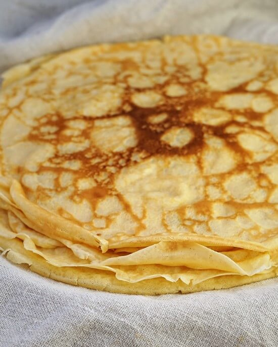

Crepe

Description
A crepe is a classic French dish made from a simple batter of flour, eggs, and milk
Crepes are easier to make than than pancakes. They can be made as sweet or savory.
Crepes can be enjoyed with a number of flavorful fillings for any meal or even dessert.
Ingredients
- 2 cups of flour
- 2 or 3 whole eggs
- 2 cups of milk
- A pinch of salt
- 2 tablespoon of sugar
- 3-4 tablespoon of melted butter
- Vanilla essence
Cooking Instructions
- Mix flour, salt and sugar
- Make a well in the middle
- Mix milk, eggs, melted butter and vanilla essence
- Mix dry and wet ingredients using a wooden spoon
- Pour a small laddle of the crepe batter in a pan
- Flip crepe when the corners change colour
- Cook for a minute on the other side